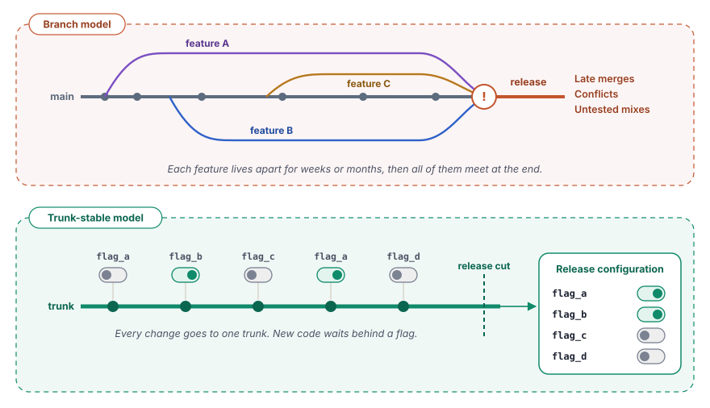
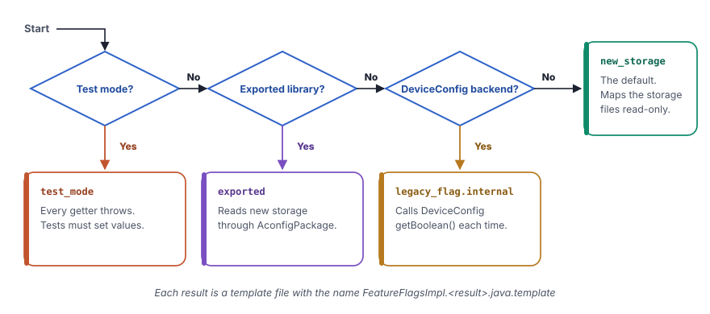
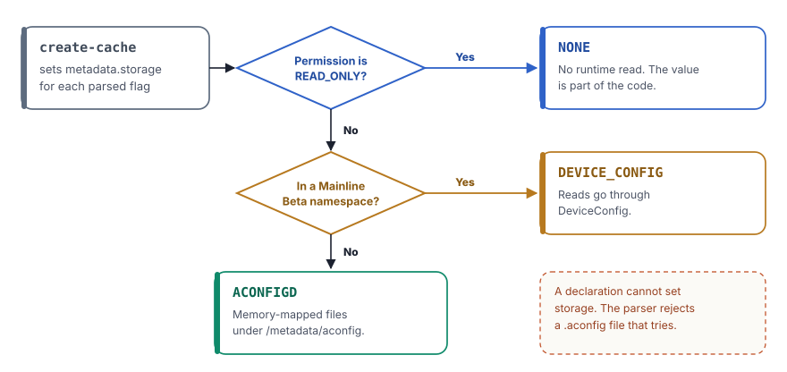

Android puts each new feature behind a declared flag, generates code for it and sets its value at build time or on the device.
The Android Open Source Project (AOSP) changes every day. Thousands of engineers add code to the same source tree, but a half-finished feature must never reach a user. Since Android 14, one system controls this conflict. Its name is aconfig. It joins build policy, code generation, storage on the device and testing into one chain.
In chapter 2, you saw how the build system turns the source tree into images. In this chapter, you follow one flag through that build and onto the device. You see how an engineer declares it and how the build gives it a value. You also see the generated classes and how the device reads the value without a call to another process. Finally, you learn how tests control flags and how a flag ends its life. The Android 17 source tree has almost 500 declaration files, so this system touches nearly every layer of the platform.
Why Android uses feature flags
For many years, Android teams kept unreleased work on long-lived feature branches. Each branch moved away from the main line for weeks or months. At release time, the teams merged all branches together. This brought large merge conflicts and combinations of features that nobody tested together.
Android now follows a trunk-stable model. All code goes to one main line with the name trunk. The trunk is always ready for a release. New code that is not ready waits behind a disabled flag. The code is present in the build, but it does not run. A release configuration then decides which flags are on for a given build target, for example trunk_staging or bp4a.

This model gives five clear benefits.
- Fewer merge conflicts. All engineers work on the same tree, so no branch moves far away from the others.
- Gradual rollout. A team can turn on a feature for internal test devices first, then for beta users and then for everyone. If a problem appears, a server can turn the flag off without an over-the-air (OTA) update.
- Independent releases. A release can start from any point on the trunk. Features that are not ready stay off.
- Better tests. Continuous integration (CI) runs the tests with flags on, off and in combinations. It finds problems between features early.
- Flagged APIs. A new public Application Programming Interface (API) can depend on a flag. The API becomes part of the official API surface only when the flag is on.
Think of a new office building. The electricians install the wiring for every floor during construction, also for floors that will open next year. Each floor has a breaker in the main panel. At handover, the building manager seals some breakers in the on or off position. Other breakers stay in a remote panel, so the manager can switch them from the control room.
The wiring is the code on the trunk. The breakers are the flags. A sealed breaker is a read-only flag, and a remote breaker is a read-write flag. The handover plan is the release configuration, and the control room is the server that pushes new values.
The two settings of every flag
Each flag has a state and a permission. The two settings are independent of each other.
| Setting | Value | Meaning |
|---|---|---|
| State | ENABLED | The feature behind the flag is active. |
| State | DISABLED | The feature behind the flag is not active. |
| Permission | READ_ONLY | The build fixes the value. Nothing can change it while the device runs. |
| Permission | READ_WRITE | A server or a local command can override the value while the device runs. |
A declaration can also set is_fixed_read_only: true. Such a flag always has the permission READ_ONLY. A release can still choose its state, but no values file can make it writable. Because the value can never change, the compilers and the R8 optimizer can remove the code path that never runs. R8 is the tool that shrinks and optimizes Java code for Android.
Android 17 adds a third setting, the type. Through Android 16, every flag was a boolean. The new schema also knows an integer type. In Android 17, this is groundwork only. The schema, the cache, the storage format and the parser understand integer flags, but the generated accessors still return a boolean.
![A grid of state against permission. Read-only and disabled means off in this build, with the value in the image. Read-only and enabled means on in this build. Read-write and disabled means off by default, and a server push or local override can turn it on. Read-write and enabled means on by default and can be turned off. On the right, three declaration options. is_fixed_read_only keeps the permission read-only. purpose is FEATURE or BUGFIX. type is boolean today, and the integer type in Android 17 is groundwork only.](../../assets/img/diagrams/ff-flag-dimensions.svg)
Containers
A container is a unit of software that the build makes and installs as one piece. The main containers are the partitions system, system_ext, vendor and product. Each Android Pony EXpress (APEX) module, for example com.android.wifi, is a container too. An app that has its own release cycle is also its own container.
The container is important because the device keeps flag storage per container. Each container gets its own set of storage files. Code in one container cannot read a flag of another container, unless the declaration exports that flag.
The path of a flag
A flag passes through two worlds. On the build computer, a Rust program with the name aconfig reads the declarations and the values, writes a cache and generates code and storage files. On the device, a daemon prepares the storage files at boot, and the generated code reads them.

The aconfig tool lives in build/make/tools/aconfig/aconfig/. It has these subcommands.
| Subcommand | What it does |
|---|---|
create-cache | Reads the declarations and the values files. Writes one binary cache in the Protocol Buffers (protobuf) format. |
create-java-lib | Generates the Java classes from the cache. |
create-cpp-lib | Generates a C++ header and source file from the cache. |
create-rust-lib | Generates a Rust library from the cache. |
create-storage | Writes the four binary storage files for the device. |
dump-cache | Prints the cache as text, as protobuf or in a custom format. |
Declare a flag
An engineer declares flags in a file with the extension .aconfig. The file uses the text form of protobuf. The message flag_declarations in aconfig_protos/protos/aconfig.proto defines the format. Each file names one package and one container, then lists the flags. This real declaration comes from the APEX daemon.
package: "com.android.apex.flags"
container: "system"
flag {
name: "mount_before_data"
namespace: "treble"
description: "This flag controls if allowing mounting APEXes
before the data partition"
bug: "361701397"
is_fixed_read_only: true
}A flag that other containers can read sets is_exported: true. A flag for a correction, not for a new feature, adds a metadata block with the purpose PURPOSE_BUGFIX.
// packages/modules/ConfigInfrastructure/framework/flags.aconfig
flag {
name: "dump_improvements"
namespace: "core_experiments_team_internal"
description: "Added more information on dumpsys device_config"
bug: "364399200"
is_exported: true
}
// system/server_configurable_flags/aconfigd/new_aconfig_storage.aconfig
flag {
name: "support_clear_local_overrides_immediately"
namespace: "core_experiments_team_internal"
description: "Support ability to clear local overrides immediately."
bug: "360205436"
metadata {
purpose: PURPOSE_BUGFIX
}
}The fields of a declaration
| Field | Required | Meaning |
|---|---|---|
name | Yes | The name of the flag in lowercase snake case, for example mount_before_data. |
namespace | Yes | The group of the flag for server-side management. |
description | Yes | What the flag controls, for human readers. |
bug | Yes | The identifier (ID) of the bug that tracks the work. The tool requires exactly one. |
is_fixed_read_only | No | Keeps the permission at READ_ONLY in every release. |
is_exported | No | Lets code outside the container read the flag. |
metadata | No | Holds the purpose of the flag, PURPOSE_FEATURE or PURPOSE_BUGFIX. |
type | No | New in Android 17. Boolean by default. The integer type needs a build flag. |
The metadata message also has a storage field, with the values ACONFIGD, DEVICE_CONFIG and NONE. An engineer cannot set it. The parser rejects a declaration that tries. The create-cache step fills it for each flag, as the section on storage explains.
message flag_metadata {
enum flag_purpose {
PURPOSE_UNSPECIFIED = 0;
PURPOSE_FEATURE = 1;
PURPOSE_BUGFIX = 2;
}
enum flag_storage_backend {
UNSPECIFIED = 0;
ACONFIGD = 1;
DEVICE_CONFIG = 2;
NONE = 3;
}
optional flag_purpose purpose = 1;
optional flag_storage_backend storage = 2;
}Names and namespaces
The tool checks each name strictly. A flag name uses lowercase snake case. It cannot start with a digit and cannot contain two underscores in a row. Thus adjust_rate is valid, but AdjustRate and adjust__rate are not. A package name is a list of such segments with dots between them, for example com.android.mypackage. A container name uses lowercase letters, with dots for APEX names.
A namespace groups the flags that one team owns and rolls out together. On the server, each namespace is a separate area that a team controls. A namespace is not the same as a package. Many packages can share one namespace, and one package can hold flags of different namespaces. The older DeviceConfig storage uses the namespace for each lookup. The new storage finds a flag by package and name, so the namespace matters less there.
Set the values for a release
A declaration gives only the identity of a flag. The values for a release come from separate values files. Each entry names a package and a flag and sets a state and a permission. Release configurations keep these entries in files with the extension .textproto.
flag_value {
package: "com.android.internal.camera.flags"
name: "single_thread_executor"
state: ENABLED
permission: READ_ONLY
}The create-cache step applies the values in a fixed order. Each later step can change the result of an earlier step.
- The default. Every flag starts as
DISABLEDwith the permissionREAD_WRITE. - The values files. The tool applies them in order. A later file overrides an earlier file.
- The release policy. If the build flag
RELEASE_CONFIG_FORCE_READ_ONLYis on, the tool changes each permission toREAD_ONLYwithout a message. IfRELEASE_ACONFIG_REQUIRE_ALL_READ_ONLYis on, the build stops with an error when any flag is still writable. - The fixed read-only check. A values file can set the state of a fixed read-only flag. If it sets the permission
READ_WRITE, the tool stops with an error.
![Five steps from top to bottom. One, the declaration default, DISABLED and READ_WRITE. Two, the first values file. Three, later values files, where each later file overrides the earlier ones. Four, the release policy, which forces read-only or fails the build if a flag is writable. Five, the fixed read-only check, where a writable value for a fixed flag is an error. The result is the final value in the cache. On the right, the cache keeps one tracepoint record for each file that sets a value, and dump-cache with the trace field shows them.](../../assets/img/diagrams/ff-value-layers.svg)
The cache keeps a tracepoint for each file that sets a value. A tracepoint records the source file, the state and the permission. Thus you can always find out why a flag has its final value.
message tracepoint {
optional string source = 1;
optional flag_state state = 2;
optional flag_permission permission = 3;
}The generated Java code
Nobody reads a flag with a string such as "com.android.apex.flags.mount_before_data". The build generates a small library for each package instead. Your code calls a normal Java method, and the compiler finds a typo at once. For Java, the generator writes up to five classes, which the next diagram shows.
![Your code calls Flags.mountBeforeData(). Flags is a final class with FLAG_ name constants, one static getter per flag and a private static FEATURE_FLAGS field. That field points to one implementation of the FeatureFlags interface. FeatureFlagsImpl is the production class that reads storage once and returns constants for read-only flags. CustomFeatureFlags asks a BiPredicate for each value. FakeFeatureFlagsImpl extends CustomFeatureFlags for tests, with setFlag and resetAll. Below, ExportedFlags is a separate class for exported libraries that reads values through AconfigPackage and checks the SDK version for finalized flags.](../../assets/img/diagrams/ff-java-classes.svg)
Flags, the public entry point
Flags is the only class that normal code uses. It has one constant with the full name of each flag and one static method for each flag. The method name is the flag name in camel case, so mount_before_data becomes mountBeforeData(). Each method calls the same method on a private field with the name FEATURE_FLAGS.
package com.android.apex.flags;
public final class Flags {
/** @hide */
public static final String FLAG_MOUNT_BEFORE_DATA =
"com.android.apex.flags.mount_before_data";
@com.android.aconfig.annotations.AssumeTrueForR8
@com.android.aconfig.annotations.AconfigFlagAccessor
public static boolean mountBeforeData() {
return FEATURE_FLAGS.mountBeforeData();
}
private static FeatureFlags FEATURE_FLAGS = new FeatureFlagsImpl();
}The annotation @AssumeTrueForR8 is the key to dead code removal. The generator puts it on each flag that is ENABLED and READ_ONLY. For a flag that is DISABLED and READ_ONLY, it uses @AssumeFalseForR8. R8 then treats the method as a constant and deletes the branch that can never run. A read-write flag gets no such annotation, because its value can change on the device.
FeatureFlags is an interface with one boolean method for each flag. It is the contract between Flags and every implementation. In test mode, Flags also gets the methods setFeatureFlags() and unsetFeatureFlags(), so a test can replace the implementation.
FeatureFlagsImpl, the value on the device
FeatureFlagsImpl holds the real work. For a read-only flag, its method returns a constant. For a read-write flag, the method reads the value from the storage files on the first call and keeps it in a static field. This excerpt shows the default template for the new storage.
public final class FeatureFlagsImpl implements FeatureFlags {
private static volatile boolean isCached = false;
private static boolean myReadWriteFlag = false;
private void init() {
try {
PlatformAconfigPackageInternal reader =
PlatformAconfigPackageInternal.load(
"com.example.flags", 0xABCD1234L);
myReadWriteFlag = reader.getBooleanFlagValue(0);
} catch (Exception e) {
Log.e(TAG, e.toString());
} catch (LinkageError e) {
// Mainline module on an older device
Log.e(TAG, e.toString());
}
isCached = true;
}
@Override
public boolean myReadWriteFlag() {
if (!isCached) init();
return myReadWriteFlag;
}
@Override
public boolean myReadOnlyFlag() {
return true; // fixed by the build
}
}Three details are important. First, a read error goes to the log and the field keeps its initial value, so a missing file does not stop the app. Second, the reader class depends on the container. Platform containers use PlatformAconfigPackageInternal and APEX containers use AconfigPackageInternal. Third, the hexadecimal number is the package fingerprint. It lets the reader confirm that the storage file matches the code.
Four templates for one class
The body of FeatureFlagsImpl depends on the mode of the library and on the storage of its flags. The function add_feature_flags_impl_template in codegen/java.rs makes the choice in a fixed order.

The DeviceConfig template reads each flag with DeviceConfig.getBoolean() at each call, without a cache. Android 17 removed an older template that read a full namespace at one time. The full set in build/make/tools/aconfig/aconfig/templates/ now has 13 files, for Java, C++ and Rust. The generator fills them with the Rust template engine TinyTemplate.
The classes for tests and for custom logic
CustomFeatureFlags implements the interface, but it asks a function for each value. The function receives the name of the flag and a getter. Thus a caller can put any logic between the code and the flag values.
FakeFeatureFlagsImpl extends CustomFeatureFlags and keeps a map from the flag name to a value. A test sets a value with setFlag() and clears all values with resetAll(). If a test reads a flag that it did not set and gave no defaults, the fake throws an exception. A name that the package does not declare also gives an exception. These checks stop a test that silently depends on a production value.
public class FakeFeatureFlagsImpl extends CustomFeatureFlags {
private final Map<String, Boolean> mFlagMap = new HashMap<>();
private final FeatureFlags mDefaults;
@Override
protected boolean getValue(String flagName,
Predicate<FeatureFlags> getter) {
Boolean value = this.mFlagMap.get(flagName);
if (value != null) return value;
if (mDefaults != null) return getter.test(mDefaults);
throw new IllegalArgumentException(flagName + " is not set");
}
public void setFlag(String flagName, boolean value) {
if (!this.mFlagMap.containsKey(flagName) && !IS_EXPORTED) {
throw new IllegalArgumentException("no such flag " + flagName);
}
this.mFlagMap.put(flagName, value);
}
public void resetAll() { /* sets every entry back to null */ }
}ExportedFlags, for apps outside the platform
An app from an app store does not build with the platform. For exported flag libraries, the generator writes ExportedFlags instead of the custom and fake classes. This class does not use Flags. It reads the values through the public class AconfigPackage and keeps its own cache. The generator also marks Flags, FeatureFlags and FeatureFlagsImpl as deprecated in this mode.
Each getter of a finalized flag starts with a check of the Software Development Kit (SDK) version. A flag is finalized when its API became part of an official SDK level. On that level or a later one, the getter returns true at once.
public static boolean myExportedFlag() {
if (Build.VERSION.SDK_INT >= 36) {
return true; // finalized at API level 36
}
if (!featureFlags.isCached) {
featureFlags.init(); // reads through AconfigPackage
}
return featureFlags.myExportedFlag;
}The number in the check is the level at which the flag was finalized. The tool reads it from the finalized-flags records, for example prebuilts/sdk/<N>/finalized-flags.txt.
Two build flags can shrink the Java code for read-only flags. With RELEASE_ACONFIG_OPTIMIZE_READ_ONLY_JAVA, each read-only getter in Flags returns its value directly and skips FEATURE_FLAGS. With RELEASE_ACONFIG_DEFAULT_ALLOW_JAVA_IMPL_INTERFACE_REMOVAL, the generator can also leave read-only flags out of the interface and the implementation. When both apply to a package with only read-only flags, the package becomes one single Flags class.
A library that still needs the full set of classes sets preserve_legacy_impl_interface: true. For finalized exported flags, Android 17 can also check the minor SDK version through Build.VERSION.SDK_INT_FULL and add the annotation @ChecksSdkIntAtLeast.
C++ and Rust code
Native code gets the same safety. For C++, the generator writes a header and a source file. The name comes from the package with underscores, for example com_android_apex_flags.h. The header defines an abstract class flag_provider_interface and a global pointer provider_ to an object that reads the storage.
#ifndef COM_ANDROID_ACONFIG_TEST_ENABLED_FIXED_RO
#define COM_ANDROID_ACONFIG_TEST_ENABLED_FIXED_RO true
#endif
namespace com::android::aconfig::test {
class flag_provider_interface {
public:
virtual ~flag_provider_interface() = default;
virtual bool enabled_fixed_ro() = 0;
virtual bool disabled_rw() = 0;
};
extern std::unique_ptr<flag_provider_interface> provider_;
// Fixed read-only: the compiler knows the value
constexpr inline bool enabled_fixed_ro() {
return COM_ANDROID_ACONFIG_TEST_ENABLED_FIXED_RO;
}
// Read-write: the provider reads the storage
inline bool disabled_rw() {
return provider_->disabled_rw();
}
} // namespace
extern "C" bool com_android_aconfig_test_disabled_rw();A fixed read-only flag becomes a constexpr function that returns a preprocessor value. The compiler knows the result and removes the dead branch, as with the old #ifdef switches. A read-write flag goes through provider_. The header also declares plain C functions with extern "C", so C code and the Java Native Interface (JNI) can read the flags. The pointer has the attribute [[clang::no_destroy]], which prevents problems with the order of destruction at the end of a process.
For Rust, the generator writes a crate with one function for each flag. A fixed read-only function returns a literal. A read-write function asks a global PROVIDER. In test mode, the provider is a Mutex that holds a map of overrides. Tests change it with the generated set_<flag>() functions and clear it with reset_flags().
![A table with Java, C++ and Rust as columns. For a fixed read-only flag, the Java getter returns a constant with an R8 annotation, C++ uses a constexpr inline function that returns a macro value, and Rust returns a literal. For a read-write flag, Java FeatureFlagsImpl reads storage once and keeps the value, C++ asks the provider_ object and Rust asks the PROVIDER, which read the storage files. In test mode, Java tests inject FakeFeatureFlagsImpl, C++ gets a setter for each flag and reset_flags, and Rust uses a Mutex provider with set functions and reset_flags.](../../assets/img/diagrams/ff-three-languages.svg)
The generator has four modes, defined in codegen/mod.rs. The mode property of the library module selects one.
| Mode | Use |
|---|---|
production | The default for code in the platform. |
test | Code for tests, with values that the test must set. |
exported | Code for consumers outside the container of the flags. |
force-read-only | Treats every flag as read-only. The native library then needs no storage code at all. |
Flag storage on the device
A read-write flag needs a place on the device that holds its current value. Android has two storage backends for this. The new backend uses memory-mapped files that the daemon aconfigd manages. The older backend uses DeviceConfig, which keeps values in the settings database. The engineer does not choose the backend. The create-cache step picks it for each flag.

A namespace for the Mainline Beta program keeps the old DeviceConfig path. Every other read-write flag uses the new storage.
Four files for each container
The step aconfig create-storage writes four binary files for each container. Together, they work like a small read-only database.
| File | What it holds |
|---|---|
package_map | A hash table from the package name to its ID, its fingerprint and the start of its values. |
flag_map | A hash table from the package ID and the flag name to the index and the type of the flag. |
flag_val | The values. Each boolean flag uses one full byte, so a read needs no bit operations. |
flag_info | Bit flags for each value. They show if the flag is writable and if a server or a local command changed it. |
The lookup always follows the same chain. The package entry gives a start index and the flag entry gives an index inside the package. The sum is the position in the value file.
![An example lookup of the flag dump_improvements in the package android.provider.flags, with example numbers. Step one, the package_map hash table gives package_id 3, start index 120 and the fingerprint. Step two, the flag_map hash table gives flag_index 2 and the type ReadWriteBoolean for the pair of package 3 and the flag name. The offset is 120 plus 2, that is 122. Step three, the flag_val file holds one byte for each flag, and the byte at offset 122 holds the value. The flag_info file holds bit flags for the same index, namely HasServerOverride, IsReadWrite and HasLocalOverride.](../../assets/img/diagrams/ff-storage-files.svg)
The format keeps its version in the first four bytes of each file. The table sizes come from a fixed list of prime numbers, which keeps the number of hash collisions low.
| Version | What it added |
|---|---|
| 1 | The package and flag maps and the value storage |
| 2 | Package fingerprints. This is the default version for new files. |
| 3 | Redaction of reads of exported flags |
| 4 | Integer flags, in Android 17 with the build flag RELEASE_ACONFIG_PARSE_V4 |
The package fingerprint is a SipHash13 value of the sorted flag names of a package. The generated code contains the fingerprint, and the storage file contains it too. If somebody adds or removes a flag, the two values differ. Thus the reader can detect code and storage that do not belong together.
The read API
The Rust crate aconfig_storage_read_api gives the low-level functions. Only generated code calls them. First, a caller maps a storage file of a container. Then it finds the package, finds the flag and reads the value at the calculated index.
pub const STORAGE_LOCATION: &str = "/metadata/aconfig";
pub unsafe fn get_mapped_storage_file(
container: &str, file_type: StorageFileType) -> Result<Mmap>
pub fn get_package_read_context(
file: &Mmap, package: &str) -> Result<Option<PackageReadContext>>
pub fn get_flag_read_context(
file: &Mmap, package_id: u32, flag: &str) -> Result<Option<FlagReadContext>>
pub fn get_boolean_flag_value(file: &[u8], index: u32) -> Result<bool>
pub fn get_storage_file_version(file_path: &str) -> Result<u32>
// Android 17, Rust only for now
pub fn get_int64_flag_value(file: &[u8], index: u32) -> Result<i64>C++ code reaches the same functions through a bridge that the cxx crate generates. Each bridge function returns a plain structure with a success field and an error message. The reason is that the Rust Result type cannot cross the Foreign Function Interface (FFI). The integer reader has no bridge yet, so generated C++ code reads only booleans.
One read, from the call to the value
Now all parts are in place. The next diagram follows one call of a read-write flag in Java.
![A sequence with five participants. Your code calls Flags.dumpImprovements(). Flags calls FEATURE_FLAGS.dumpImprovements(). On the first call only, FeatureFlagsImpl calls load with the package name and fingerprint on the platform package reader, which maps the files in /metadata/aconfig read-only, gets package and flag data and returns the value for each index. FeatureFlagsImpl keeps the values in static fields and returns true or false. Later calls return the cached field, with no file access and no IPC.](../../assets/img/diagrams/ff-read-path.svg)
- Your code calls the getter. The call
Flags.dumpImprovements()forwards toFEATURE_FLAGS, which is aFeatureFlagsImplobject. - The implementation checks its cache. If
isCachedis true, it returns the value from a static field. This is the normal case after the first call. - The first call loads the package. The implementation calls
load()with the package name and the fingerprint. The reader maps the storage files of the container in read-only mode. - The reader finds the values. It looks up the package in
package_map, compares the fingerprint and reads each value fromflag_valat its index. - The implementation keeps the values. It writes them into its static fields and sets
isCached. Every flag of the package is now ready. - The value returns to your code. No call crossed into another process, and later calls cost only one field read.
Because the values stay in fields, a process keeps the values from its first read for its whole life. This keeps the behavior of a running app stable. A new value takes effect in a process only after that process starts again.
aconfigd prepares the storage at boot
The storage files in a container image are only the starting point. The device keeps the live copies under /metadata/aconfig, together with any overrides. A daemon with the name aconfigd creates and updates these copies. It exists in two binaries.
| Binary | Location | Job |
|---|---|---|
aconfigd-system | /system/bin/ | The flags of the platform containers |
aconfigd-mainline | /apex/com.android.configinfrastructure/bin/ | The flags of the Mainline modules |
The init program starts aconfigd-system three times during boot, each time with a different command. The file aconfigd.rc defines the three services.
service early_system_aconfigd_platform_init
/system/bin/aconfigd-system early-platform-init
class core
user system
group system
oneshot
disabled
service system_aconfigd_platform_init
/system/bin/aconfigd-system platform-init
...
service system_aconfigd_socket_service
/system/bin/aconfigd-system start-socket
...
socket aconfigd_system stream 666 system system
on early-init
mkdir /metadata/aconfig 0775 root system
mkdir /metadata/aconfig/flags 0770 root system
mkdir /metadata/aconfig/maps 0775 root system
mkdir /metadata/aconfig/boot 0775 root system
exec_start early_system_aconfigd_platform_init![A timeline with three stages. In early-init, init makes the flags, maps and boot folders under /metadata/aconfig. If enable_earlier_aconfigd is on, early-platform-init prepares the platform storage and writes the early_init_done marker on success. In post-fs, platform-init checks for the marker. If it is present, it skips the work and deletes the marker. If not, it prepares the storage now, for example after a data wipe. Later in boot, start-socket listens on the aconfigd_system socket, reads the storage records and applies server and local overrides on request. A failed request goes to the log and the loop keeps running. Below, aconfigd-mainline in the configinfrastructure APEX does the same work for Mainline module flags, and in Android 17 the platform keeps its own records file.](../../assets/img/diagrams/ff-boot.svg)
The early start is new in Android 17, behind the check enable_earlier_aconfigd(). It makes the platform flags available earlier in boot. The post-fs step then works only as a second chance, for example after a data wipe. The socket service stays active. It receives override requests, writes them to the storage and logs any request that fails, so one bad request cannot stop the daemon.
/metadata/aconfig/
storage_records.pb index of all storage files
platform_storage_records.pb platform records (Android 17)
maps/
system.package.map
system.flag.map
com.android.wifi.package.map
...
flags/
system.val
system.info
...
boot/
system.val snapshot for this boot
...In Android 17, aconfigd-system is a pure Rust binary. The temporary migration flag for the Rust version is gone, because the Rust daemon is now the only version.
The older DeviceConfig path
Before aconfigd, flags lived only in DeviceConfig. DeviceConfig keeps its values in the config table of the settings provider, in the file settings_config.xml. Some flags still use it, as the backend choice above shows. This path has four limits.
- Boot order. DeviceConfig needs the settings provider. A flag that code reads before the provider starts cannot use it.
- Cost of each read. Each read is an Inter-Process Communication (IPC) call through Binder into
system_server. - No atomic reads across namespaces. One namespace reads as a unit, but two namespaces do not.
- Access rules. A process needs special Security-Enhanced Linux (SELinux) permissions to read the values.
The generated code for this path turns the boot-order problem into a clear error message.
@Override
public boolean myReadWriteFlag() {
try {
return DeviceConfig.getBoolean(
"my_namespace", Flags.FLAG_MY_READ_WRITE_FLAG, false);
} catch (NullPointerException e) {
throw new RuntimeException(
"Cannot read value from namespace my_namespace "
+ "from DeviceConfig. It could be that the code "
+ "using flag executed before SettingsProvider "
+ "initialization. Please use fixed read-only flag "
+ "by adding is_fixed_read_only: true in flag "
+ "declaration.", e);
}
}The aflags tool
On a device, the command-line interface (CLI) aflags shows and changes flag values. The binary in /system/bin is only a small wrapper. It starts aflags_updatable in the configinfrastructure APEX, so Google can update the tool through Mainline.
# List all flags with their values
adb shell aflags list
# Only the flags of one container
adb shell aflags list --container system
# Override a read-write flag
adb shell aflags enable com.android.apex.flags.mount_before_data
# Remove the override again
adb shell aflags unset com.android.apex.flags.mount_before_dataThe commands enable, disable and unset accept the option --immediate. Android 17 adds aflags list --format proto, which prints the list as Base64-encoded protobuf. It can also merge the Mainline Beta flags from DeviceConfig into the list.
Build system integration
The Soong build system from chapter 2 knows flags through special module types. The file build/soong/aconfig/init.go registers the modules for declarations and values. The file build/soong/aconfig/codegen/init.go registers the modules that generate code.
| Module type | Job |
|---|---|
aconfig_declarations | Takes the .aconfig files of one package and makes its cache. |
aconfig_values | Holds the values files for one package. |
aconfig_value_set | Collects many values modules into one set for a release. |
java_aconfig_library | Generates the Java library from a declarations module. |
cc_aconfig_library | Generates the C++ library. |
rust_aconfig_library | Generates the Rust crate. |
aconfig_declarations_group | Puts many flag libraries into one dependency. |
all_aconfig_declarations | Collects every declaration in the tree into combined files. |
exported_java_aconfig_library | Builds android-flags.jar with all exported flags for the SDK. |
A team that adds flags to its module writes two short blocks in its Android.bp file. Then its code module adds the generated library as a normal dependency.
aconfig_declarations {
name: "my-feature-flags",
package: "com.android.myfeature.flags",
container: "system",
srcs: ["my_feature.aconfig"],
}
java_aconfig_library {
name: "my-feature-flags-java",
aconfig_declarations: "my-feature-flags",
}
java_library {
name: "my-feature",
srcs: ["src/**/*.java"],
static_libs: ["my-feature-flags-java"],
}The values reach the declarations without a line in this file. The release configuration variable RELEASE_ACONFIG_VALUE_SETS names the value sets of the current build. In its DepsMutator step, each aconfig_declarations module adds those sets as an implicit dependency. The create-cache rule then uses the values of the matching package.
![The release configuration variable RELEASE_ACONFIG_VALUE_SETS names aconfig_value_set modules, which hold aconfig_values modules for package A and package B. Each aconfig_declarations module with .aconfig files, a package and a container gets the matching values as an implicit dependency, and create-cache makes one cache per package. From it, java_aconfig_library, cc_aconfig_library and rust_aconfig_library generate libraries that a Java or Kotlin module uses through static_libs, a C++ module through shared_libs and a Rust module through rustlibs. Across the whole tree, all_aconfig_declarations makes one file with every flag, the storage files and the list of finalized flags, and exported_java_aconfig_library makes android-flags.jar in the SDK for apps outside the platform.](../../assets/img/diagrams/ff-soong-graph.svg)
The library modules add their own dependencies. A Java flag library depends on the annotation library for R8, on unsupportedappusage and on aconfig_storage_stub. A C++ flag library depends on libaconfig_storage_read_api_cc, libbase and liblog, except in the mode force-read-only. Soong also adds JarJar rules, which can rename the generated Java classes when an exported library is repackaged.
Some build rules protect the whole system. The module all_aconfig_declarations stops the build if two declarations modules use the same package. Each flag thus has exactly one source, and the IDs and storage positions stay predictable. The rule for create-cache writes its result only if the content changed, so a rebuild does not touch the generated code without a reason.
A small set of build flags controls the policy for a release.
| Build flag | Effect |
|---|---|
RELEASE_ACONFIG_VALUE_SETS | Names the value sets that apply to the build. |
RELEASE_ACONFIG_FLAG_DEFAULT_PERMISSION | The default permission of all flags, READ_WRITE unless set. |
RELEASE_ACONFIG_REQUIRE_ALL_READ_ONLY | Makes a writable flag a build error. |
RELEASE_CONFIG_FORCE_READ_ONLY | Changes every permission to READ_ONLY. |
RELEASE_ACONFIG_STORAGE_VERSION | The version of the storage format, 2 unless set. |
These are build flags, a different kind of flag. A build flag changes only how the build works. It generates no accessor code and needs no storage on the device.
Test code with flags
Flags make testing harder. A module with N flags has 2N combinations of values. Android gives a set of tools that keep this under control. Two rules form the base, and annotations tell them what to do.
![Left, SetFlagsRule for unit tests in five steps. Before the test, reflection saves the field Flags.FEATURE_FLAGS. The rule then puts a FakeFeatureFlagsImpl in it. @EnableFlags and @DisableFlags fill the map of the fake. During the test, Flags.myFlag() reads the value from the map. After the test, the rule puts the original implementation back. Right, CheckFlagsRule for device tests. DeviceFlagsValueProvider reads the real state of each flag on the device. If the device state matches the @RequiresFlagsEnabled or @RequiresFlagsDisabled rule, the test runs. If not, the test is skipped, not failed. The rule never changes a flag.](../../assets/img/diagrams/ff-test-rules.svg)
SetFlagsRule for unit tests
SetFlagsRule is a JUnit rule in platform_testing/libraries/flag-helpers/. Before each test, it uses reflection to save the field FEATURE_FLAGS of each Flags class and to put a FakeFeatureFlagsImpl in its place. After the test, it puts the original object back. The annotations @EnableFlags and @DisableFlags set the values for a test method or a full test class.
@RunWith(AndroidJUnit4.class)
public class MyFeatureTest {
@Rule
public final SetFlagsRule mSetFlagsRule = new SetFlagsRule();
@Test
@EnableFlags(Flags.FLAG_MY_NEW_FEATURE)
public void newPathWhenEnabled() {
assertTrue(Flags.myNewFeature());
}
@Test
@DisableFlags(Flags.FLAG_MY_NEW_FEATURE)
public void oldPathWhenDisabled() {
assertFalse(Flags.myNewFeature());
}
}If a class annotation and a method annotation set the same flag, the two values must agree. A conflict gives an AssertionError. One level also cannot enable and disable the same flag.
The older methods enableFlags() and disableFlags() on the rule still work, but they are deprecated. The rule has two start modes. With NULL_DEFAULT, a test must set each flag that it reads. With DEVICE_DEFAULT, the flags start with the values of the build.
Test every combination
When two flags interact, FlagsParameterization runs one test for each combination. For two flags, the test runs four times.
@RunWith(Parameterized.class)
public class MyParameterizedTest {
@Parameterized.Parameters(name = "{0}")
public static List<FlagsParameterization> getParams() {
return FlagsParameterization.allCombinationsOf(
Flags.FLAG_FEATURE_A, Flags.FLAG_FEATURE_B);
}
@Rule
public final SetFlagsRule mSetFlagsRule;
public MyParameterizedTest(FlagsParameterization flags) {
mSetFlagsRule = new SetFlagsRule(flags);
}
}If a test also has @EnableFlags and a combination does not fit, JUnit skips that combination. It does not count as a failure.
Rules for device and host tests
An instrumentation test on a real device cannot change the flags of the system. For this case, CheckFlagsRule reads the real values through DeviceFlagsValueProvider. The annotations @RequiresFlagsEnabled and @RequiresFlagsDisabled state a precondition. If the device does not meet it, the test is skipped. This is important for the Compatibility Test Suite (CTS), which must pass on devices with different flag values.
| Aspect | SetFlagsRule | CheckFlagsRule |
|---|---|---|
| Flag control | Sets values in the test process | Reads the state of the device |
| On a mismatch | Not possible, the rule sets the value | Skips the test |
| Typical use | Unit tests and Robolectric | Instrumentation tests on a device |
| Annotations | @EnableFlags, @DisableFlags | @RequiresFlagsEnabled, @RequiresFlagsDisabled |
Tests that run on the host computer use HostFlagsValueProvider. It takes read-only values from the parsed flags file that comes with the test. It takes read-write values from the connected device with aflags list. Ravenwood, the host-side test environment for platform code, needs no special provider. SetFlagsRule works there through the same reflection.
Test mode in the generated code
A library with mode: "test" generates a FeatureFlagsImpl that throws UnsupportedOperationException for every flag. A test must therefore set each value. In C++, test mode adds a setter for each flag and a function reset_flags().
TEST(MyTest, FeatureEnabled) {
com::android::aconfig::test::my_flag(true); // setter
// ... test the new path ...
com::android::aconfig::test::reset_flags();
}- Test both values of every flag. A path without tests breaks on the day the flag changes.
- Prefer the annotations to calls in the test code. They are easier to read and work with parameterization.
- Use
allCombinationsOf()when two flags change the same behavior. - The rule restores the flags after each test, but static state in the code under test can keep an old value.
The life of a flag
A flag is temporary by design. It starts with the first line of a new feature and ends when the feature is stable. Each phase has a clear owner and a clear end.
![Four phases from left to right. Development, where you declare the flag as DISABLED, guard the new code and test with overrides. Testing, where dogfood and beta builds turn it on as READ_WRITE, a server runs a staged rollout and CI tests both states. Launch, where the release config sets ENABLED and READ_ONLY and a flagged API is finalized for its SDK level. Cleanup, where you remove the checks, the declaration, the old path and the dependency. Below, a bugfix flag takes a short path, READ_WRITE first for a fast rollback, READ_ONLY after one release with the fix, and removed in the following release.](../../assets/img/diagrams/ff-lifecycle.svg)
The last phase is important. Old flags add branches that nobody tests and settings that nobody understands. The command dump-cache helps to find flags that have the same fixed value in all release configurations. Such flags are ready for removal.
A bugfix flag has a shorter life. It starts as writable, so a team can turn off a bad fix at once. After one release with the fix active, it becomes read-only. In the next release, the team removes it.
Exported and finalized flags, and @FlaggedApi
A Mainline module ships on many Android versions, and apps outside the platform use its APIs. Such a module exports its flags with is_exported: true. When a new API depends on a flag, the API carries the annotation @FlaggedApi.
@FlaggedApi(Flags.FLAG_MY_NEW_API)
public void myNewApi() {
// part of the public API only when the flag is on
}The documentation and API tool metalava reads this annotation. It decides if the API goes into the public API signature and into the SDK stubs. It also checks that each finalized API keeps the link to its flag. When the API becomes final for an SDK level, the build records the flag in the message finalized_flag, with the name, the package and min_sdk. The generated exported code then returns true on that level and later levels, as you saw in ExportedFlags.
Older ways to switch features
Before aconfig, Android used several other mechanisms. Much code still uses them, and aconfig sometimes delegates to them, so you will meet all of them.
- System properties. String values such as
ro.feature.my_feature. Aro.property is fixed at boot, and apersist.property survives a reboot. There is no type safety and no central list. A value can have at most 91 characters. - Settings.Global and Settings.Secure. Values in the settings provider. They need a
ContentResolverand are not available before the provider starts. - DeviceConfig. Since Android 10, values in namespaces that a server can push. The code now lives in the configinfrastructure Mainline module.
- Resource overlays. Values in
config.xmlthat a device maker, the Original Equipment Manufacturer (OEM), overrides with a Runtime Resource Overlay (RRO) or a static overlay. - Preprocessor macros. Switches such as
#ifdef ENABLE_FANCY_RENDERING, set withcflagsin the build. A typo in the name silently creates a new macro.
| Property | aconfig | System property | Settings.Global | DeviceConfig | config.xml |
|---|---|---|---|---|---|
| Type safety | Yes, generated code | No | No | No | Limited |
| Central declaration | Yes | No | No | No | XML file |
| Control at build time | Yes | Yes | No | No | Yes |
| Control at run time | Yes, read-write flags | Limited | Yes | Yes | No |
| Server push | Yes | No | No | Yes | No |
| Dead code removal | Yes | No | No | No | No |
| Test support | Yes | Manual | Manual | Manual | Manual |
| Available early in boot | Yes, new storage | Yes | No | No | Yes |
To move an old switch to aconfig, declare a flag with the same meaning and generate its library. Then replace each old read with the generated method, add values that keep the old default and add tests for both values. Remove the old switch when no code reads it. Remember that the declaration cannot keep the DeviceConfig backend. Only the namespace decides it.
What changed in Android 17
| Area | Change |
|---|---|
| Flag types | A new flag_type field and an integer value field. The build flag RELEASE_ACONFIG_ENABLE_INT_FLAG allows integer declarations. Generated accessors still return boolean values. |
| Storage | Version 4 of the format with integer flags, behind RELEASE_ACONFIG_PARSE_V4, with a new Rust reader get_int64_flag_value. |
| Java code | Read-only getters can return their value directly. A package with only read-only flags can become one Flags class. |
| Templates | The separate DeviceConfig template is gone. Its logic now lives in the legacy_flag.internal template. |
| Finalized flags | Checks of the minor SDK version and the annotation @ChecksSdkIntAtLeast, each behind its own build flag. |
| Daemon | A pure Rust aconfigd-system, the new early-platform-init step and a separate records file for the platform. |
| aflags | Output as protobuf and Mainline Beta flags in the list. |
| Build | A response file for create-cache, a srcs list that can change with select() and a split of all_aconfig_declarations into a module and a singleton. |
Flags decide which code runs on millions of devices, so they are a security control in their own right. These are the main risks and the protections that the system gives.
- Disabled code still ships. A read-write flag that is off keeps its code in the image. A reverse engineer can find unreleased features there. A bug in that code is a real bug on the day a server turns the flag on. Review the code behind a flag before the rollout, not only at the launch.
- Writable flags are an input. A read-write flag can change while the device runs, so the code behind it must handle both values safely at any start of a process. A release can remove this risk completely with
RELEASE_ACONFIG_REQUIRE_ALL_READ_ONLY, which makes every writable flag a build error. - Control of the overrides. The daemon
aconfigdmanages the live storage. The folder for values under/metadata/aconfig/flagshas the mode 0770 and belongs to root and the group system. Client processes map the files read-only. On Android, SELinux policy also controls which processes can reach sockets such asaconfigd_system. - Code and data that do not match. The package fingerprint lets the reader detect storage that belongs to another version of the code. A read error goes to the log, and the code continues with its initial value instead of a random one.
- Fixes that a server can turn off. A bugfix flag starts as writable, so a team can quickly turn off a bad fix. For a security fix, this also means that somebody can turn the fix off. Keep that period short, or make the flag read-only from the start.
- Old switches. System properties and settings have no central list and no type safety. A typo in a name can silently disable a protection. Generated accessors move such errors to compile time.
For the curious, source files and inner details Optional
| Path | What it holds |
|---|---|
build/make/tools/aconfig/aconfig_protos/protos/aconfig.proto | The schema for declarations, values, parsed flags and tracepoints |
build/make/tools/aconfig/aconfig/src/commands.rs | The subcommands, the value order and the choice of the storage backend |
build/make/tools/aconfig/aconfig/src/codegen/java.rs | The Java generator and the choice of the template |
build/make/tools/aconfig/aconfig/src/codegen/cpp.rs, rust.rs | The C++ and Rust generators |
build/make/tools/aconfig/aconfig/templates/ | The 13 templates for Java, C++ and Rust |
build/make/tools/aconfig/aconfig_storage_file/src/ | The storage format, the versions and the node structures |
build/make/tools/aconfig/aconfig_storage_read_api/src/lib.rs | The read functions and the C++ bridge |
build/soong/aconfig/ | The Soong module types and build rules |
system/server_configurable_flags/aconfigd/ | The daemon, its .rc file and its commands |
packages/modules/ConfigInfrastructure/aflags/src/main.rs | The real aflags tool |
platform_testing/libraries/flag-helpers/ | SetFlagsRule and the value providers for tests |
The structures behind the two hash tables are small. Each entry has a next_offset field for the chain of entries with the same hash.
pub struct PackageTableNode {
pub package_name: String,
pub package_id: u32,
pub fingerprint: u64, // version 2 and later
pub redact_exported_reads: bool, // version 3
pub boolean_start_index: u32,
pub int_start_index: u32, // version 4
pub next_offset: Option<u32>,
}
pub struct FlagTableNode {
pub package_id: u32,
pub flag_name: String,
pub flag_type: StoredFlagType, // ReadWriteBoolean, ReadOnlyBoolean,
// FixedReadOnlyBoolean
pub flag_index: u16,
pub next_offset: Option<u32>,
}
pub enum FlagInfoBit {
HasServerOverride = 1 << 0,
IsReadWrite = 1 << 1,
HasLocalOverride = 1 << 2,
}Version 4 adds the types ReadWriteInt64, ReadOnlyInt64 and FixedReadOnlyInt64. Each hash table takes its size from the constant HASH_PRIMES. This list has 29 prime numbers and starts with 7, 17, 29, 53 and 97.
The C++ bridge returns plain structures instead of a Rust Result.
#[cxx::bridge]
mod ffi {
pub struct BooleanFlagValueQueryCXX {
pub query_success: bool,
pub error_message: String,
pub flag_value: bool,
}
extern "Rust" {
pub fn get_boolean_flag_value_cxx(
file: &[u8], offset: u32) -> BooleanFlagValueQueryCXX;
}
}The Soong rule for create-cache gives the declarations and values through a response file, which avoids limits on the length of a command line. It then copies the result only if the content changed.
Command2: blueprint.NewCommand(
Aconfig, ` create-cache`,
` --package ${package}`,
` ${container}`,
` @${out}.rsp`,
` ${default-permission}`,
` ${allow-read-write}`,
` ${mainline-beta-namespace-config}`,
` ${force-read-only}`,
` --cache ${out}.tmp`,
` && `, android.CpIfChanged, ` ${out}.tmp ${out}`,
),The module all_aconfig_declarations collects every declaration in the tree, not only the declarations of the current product. Thus the server-side flag system needs only one build to know all flags.
On an emulator or a phone. Look at the flags of your device. The list works with adb shell. For an override, use an emulator or a userdebug build with adb root.
# All flags with their values and permissions
adb shell aflags list
# The flags of one package
adb shell aflags list | grep "android.provider.flags"
# Needs root: override a read-write flag, check it, remove it
adb shell aflags enable android.provider.flags.dump_improvements
adb shell aflags list | grep dump_improvements
adb shell aflags unset android.provider.flags.dump_improvements
# Needs root: the live storage files
adb shell ls -la /metadata/aconfig/maps/ /metadata/aconfig/flags/In an AOSP source tree. Build the tool, write a small declaration and see what the generator makes.
m aconfig
cat > /tmp/test.aconfig << 'EOF'
package: "com.example.test"
container: "system"
flag {
name: "my_test_flag"
namespace: "test_namespace"
description: "A test flag for learning"
bug: "12345"
}
EOF
aconfig create-cache --package com.example.test --container system \
--declarations /tmp/test.aconfig --cache /tmp/test-cache.pb
aconfig dump-cache --cache /tmp/test-cache.pb \
--format '{fully_qualified_name} {state} {permission} {trace}'
mkdir -p /tmp/java-out
aconfig create-java-lib --cache /tmp/test-cache.pb \
--mode production --out /tmp/java-out
find /tmp/java-out -name "*.java"Add is_fixed_read_only: true to the flag, run the commands again and compare the generated Flags.java. Then count the declarations in the full tree with find . -name "*.aconfig" | wc -l.
Key terms
- Feature flag
- A named switch that turns a feature on or off without a change to the code.
- Trunk-stable
- A model where all code goes to one main line that is always ready for a release.
- aconfig
- The Android flag system, and the name of its build tool.
- Release configuration
- The settings of one build target, including the value sets of its flags.
- State
- ENABLED or DISABLED.
- Permission
- READ_ONLY (fixed by the build) or READ_WRITE (can change on the device).
- Fixed read-only
- A flag that can never become writable, so compilers can remove its dead code.
- Container
- A partition, an APEX module or an app that the build installs as one piece.
- Namespace
- A group of flags that one team manages on the server.
- Values file
- A file that sets the state and permission of flags for a release.
- Tracepoint
- A record in the cache that shows which file set a value.
- FeatureFlagsImpl
- The generated class that returns the real values on the device.
- R8
- The tool that shrinks and optimizes Java code for Android.
- aconfigd
- The daemon that prepares the flag storage and applies overrides.
- Package fingerprint
- A SipHash13 value of the flag names that links the code to its storage.
- aflags
- The device command that lists and overrides flags.
- @FlaggedApi
- The annotation that links a new API to its flag.
- AOSP
- Android Open Source Project.
- APEX
- Android Pony EXpress, the format of updatable system modules.
- API
- Application Programming Interface.
- CI
- Continuous integration.
- CLI
- Command-line interface.
- CTS
- Compatibility Test Suite.
- FFI
- Foreign Function Interface.
- ID
- Identifier.
- IPC
- Inter-Process Communication.
- JNI
- Java Native Interface.
- OEM
- Original Equipment Manufacturer.
- OTA
- Over-the-air update.
- RRO
- Runtime Resource Overlay.
- SDK
- Software Development Kit.
- SELinux
- Security-Enhanced Linux.